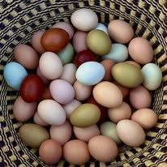

Farm Fresh Eggs
Gathered every morning and set straight in the cooler. The hens slow down a little in the deep cold and the very hottest weeks, so on a busy day the cartons can go early, but eggs are a year-round fixture at the stand.
The stand follows the season rather than a shopping list. Eggs and honey are there every month of the year; everything else arrives when the garden, the bees and the weather agree on it.
Open Daily 9 AM – 7 PMWhatever the calendar says, these two are waiting for you. Snow, heat or harvest, the cooler and the honey shelf stay stocked.

Gathered every morning and set straight in the cooler. The hens slow down a little in the deep cold and the very hottest weeks, so on a busy day the cartons can go early, but eggs are a year-round fixture at the stand.

Our bees work the flowers a few hundred feet from the stand, and the honey is jarred raw, never heated or filtered thin. It is put up once the supers come off, then it carries us right through to the next season.
Central Illinois keeps its own schedule, so treat this as a guide rather than a promise. A cool spring pushes everything back two weeks; a warm one brings it early. Weather depending, here is roughly when things turn up.
The produce table is resting. The handmade shelf carries the stand through winter.
Much the same as January, though the hens usually pick up as the days stretch out.
Nothing new on the table yet, but the beds are being turned over and the asparagus is thinking about it.
Asparagus comes in a handful of spears at a time, so it does not sit around long.
Asparagus hits its stride this month. The cutting season is short and weather dependent, so early in the day is your best bet.
Gooseberries and currants are a June thing and a short one. They rarely last beyond the month.
The busiest table of the year. Sweet corn usually starts mid-July, weather depending.
Everything at once, more or less. The tomatoes and peppers are usually at their best now.
Summer starts to wind down. The last of the sweet corn and the early plums usually finish before the month is out.
The first hard frost draws a line under the summer crops. Eggs, honey and the handmade shelf carry on as normal.
The produce table goes quiet and the handmade shelf takes over for the winter.
A jar of honey and a bottle of vanilla make a tidy gift. The stand stays open, cold or not.


We are on County Road 2200 N, open every day from 9 in the morning until 7 at night. Pull in, see what is out, and pay however suits you.